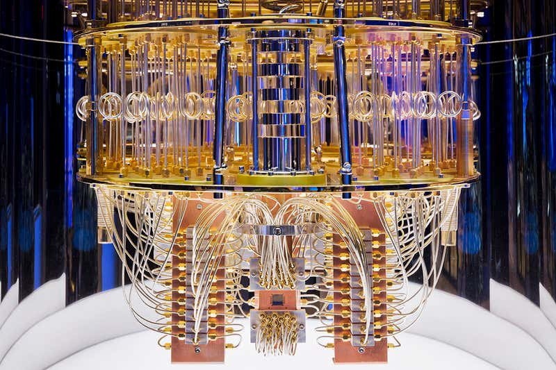
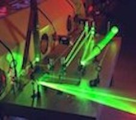

Le calcul automatique utilisant les propriétés quantiques peut se concevoir en deux familles possibles:
Un ordinateur, c'est-à-dire une machine du type de von Neumann dont le programme lui-même serait quantique, en particulier les adresses d'exécution.Un calculateur quantique, c'est-à-dire un ordinateur classique utilisant simplement un circuit quantique de calcul.Exemple de code pour l'ordinateur quantique:Printf:(/n'Hello_world")
Ordinateur_quantique.
La cryptographie quantique, plus correctement nommée distribution quantique de clés, désigne un ensemble de protocoles permettant de distribuer une clé de chiffrement secrète entre deux interlocuteurs distants, tout en assurant la sécurité de la transmission grâce aux lois de la physique quantique et de la théorie de l'information.
Cryptogramme_quantiquePour l'article détaillé, voir: Théorie de l'information quantique.
Une sous-branche de la théorie de l'information pour traiter de l'information de l'informatique quantique. Les principaux sujets traités sont les codes correcteurs quantiques et le calcul quantique avec tolérance d'erreurs. La téléportation quantique joue aussi un rôle central.
Pour plus d'information sur la téléportation quantique, voici un lien :Tq
| Personnes | Date | Découverte | Classement |
|---|---|---|---|
| Richard Feynman | 1982 | Parralelisme quantique | Premier |
| Charles H.Bernett | 1984 | Sources de photos | Deuxiéme |
| Etan Bermtain | 1993 | M.turing polynomial | Quatriéme |
{kind=link}